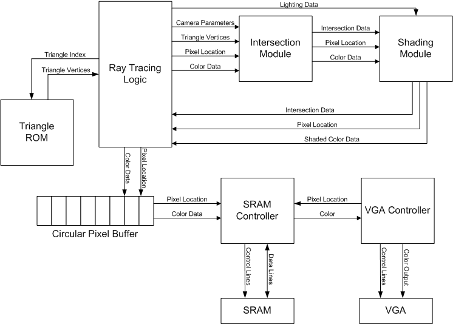
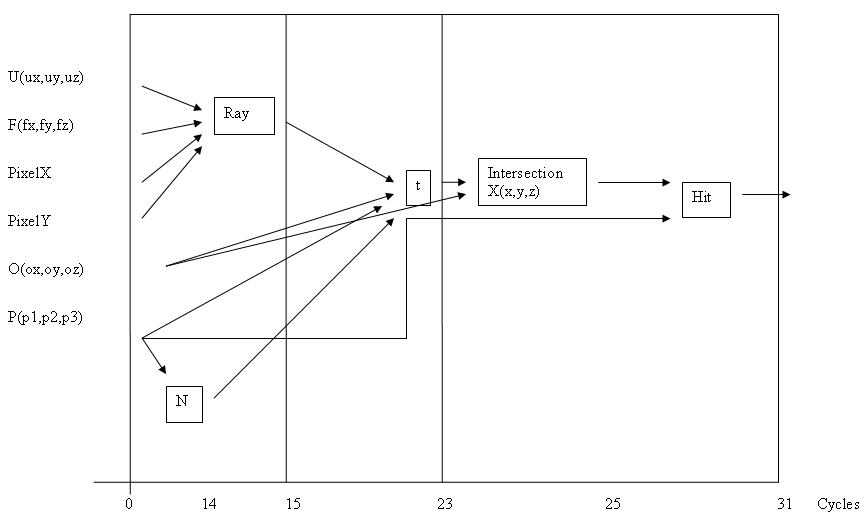
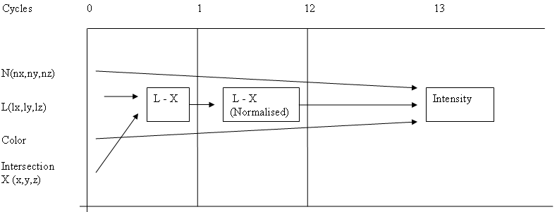

High Speed Hardware Raytracer
Daniel Beer (dbb28), Kashif Javed (kj49)
Hardware Design
Our hardware design is fairly straightforward. As ray tracing is inherently a highly parallel operation, we took advantage of this by making a pipelined design. Since each ray calculation can be run in parallel, we had no chance of data hazards in our pipeline and could make it as long as we wanted. We decided to try to make our system run at the VGA clock, or 25.125 Mhz, which we accomplished by making a 43 stage pipeline. Our images are rendered at 320 x 240 resolution in 12-bit color.
The system has a few major parts: scene ROM, ray tracing logic, intersection module, shading module, a circular pixel buffer, an SRAM controller, and a VGA controller. The basic operation is as follows:
- The ray tracing logic reads triangles out of the scene ROM.
- For each pixel on the screen and triangle in the scene, the pixel and triangle are passed to the intersection logic. Since this is pipelined, one data set can be passed in each clock cycle.
- The intersection module calculates the intersection point and normal to the triangle and passes them to the shading module. The intersection is also tested to see if it is on the triangle and the distance to this intersection is found.
- The shading module uses the intersection point, normal to the triangle, and light position to calculate the shading on this pixel.
- The shaded color and pixel distance is passed back to the ray tracing logic. When all the pixel-triangle intersections are calculated for a specific pixel, the closest intersection is selected and its shaded color is placed in the next slot in the circular pixel buffer.
- The SRAM controller reads color values out of the buffer and places writes into the SRAM. It also provides color values to the VGA controller for pixels it is drawing.

Figure 1: Hardware Overview
Number system
All mathematical functions are implemented using Altera megafunctions including adders, signed multipliers, signed dividers, and a square root function. Vector additions are represented by storing each component of the vector separately, with additions, scalar multiplications, and scalar divisions done on each separately. Dot products are performed by multiplying the x, y, and z components of both vectors together then adding all the results.
Since we were pipelining the system to run at 25.125 Mhz, we needed to figure out how many mathematical functions we could fit into one cycle, and how many cycles some of the more complex ones took. We did this by creating an empty module with each operation, and using the timing analyzer to find out how long it took to resolve. For the division and square root operations, we adjusted the number of pipeline stages until the timing analyzer said that its allowable clock time was within our specifications. We found that we could do three additions or one multiplication in one cycle. Divisions could be made with a five cycle latency, while the square root had a two cycle latency.
Numbers are represented in a fixed point format using 2’s complement for negative numbers. We parameterized all files so that the bus width and fixed point can be placed at any bit. For our final system we chose to use 24-bit number with the decimal point placed after the 12th bit. Converting numbers for our system is done by shifting up by 12.
When multiplying two fixed point numbers in this system, the result will come out shifted up while divide results will be shifted down. Therefore, we shift the output of all our multipliers down by 12, and we shift the numerator of all our divides up by 12 before dividing. Also, the square root result is shifted up by 6.
Ray Tracing Logic
This logic is the main controller that runs the ray tracing calculations. It consists of a number of counters and registers. The counters keep track of the current pixel position and the current triangle index. The triangle index counter is connected to the triangle ROM address line, and the triangle data is read out. The pixel position and triangle data output are connected to the inputs on the intersection module. Every clock cycle, the triangle index is incremented. If the triangle index reaches the number of triangles, it is reset and the pixel position is incremented. Likewise, if the pixel position reached the end of the screen, it is reset.
In addition to feeding the inputs to the intersection pipeline, the controller also reads out the data produced by it each cycle. The intersection distance, pixel position (as this is different from the one being passed in to the pipeline), ray hit condition, and color are read out. The intersection distance is held in a register that is initially set to farthest distance we want to render in our system. The color is held in a register that is initialized to black.
If the ray did hit the triangle and intersection distance read out is less than the current distance and greater than zero, the intersection distance and color registers are updated. When the pixel position changes, we have found the result of all intersections with the last pixel, so the color and old pixel position are written into the circular buffer. The intersection and color registers are reset to their initial values in preparation for the next pixel.
This module also took user input for some of the variables into our system, as well as holding some constant. The maximum ray distance for each pixel is settable using the switches on the DE2 board. The image origin is initially set, but at the end of each frame it is updated based on the switches 0 to 5 (if switch 0 is down the origin is moved 1 unit in the x direction, if switch 1 is down the origin is moved 1 unit in the –x direction, etc). Also, switch 6 controls whether the shading module is used to color the pixels. To help fit our logic on the FPGA, the light position, up vector and forward vector are fixed so that the logic they drive can be synthesized away.
Scene ROM
This ROM holds the triangles that make up the scene geometry. Each triangle is stored as nine 24-bit values, one for each of the three components of the three points of the triangle. A 12-bit color is also stored for each triangle. The ROM has 128 blocks each of which hold 228 bits of data. Access is synchronous, so it has an output latency of one. The scene must be initialized at compile time, which is done using an MIF file.
Intersection Module
This module performs all ray triangle intersection calculations including casting the ray, intersecting the ray with the plane of the triangle, and checking if the intersection is inside the triangle. The module is separated into 31 pipeline stages that implement the ray tracing algorithm detailed above. To create the module we broke the formula up into 31 steps, running as many operations as we can in parallel, and placed registers between each stage to pipeline it. Each register is updated at a global clock and each update can be enabled or disabled with a global clock enable. Shift register used to pass data across multiple stages.
The inputs to this system are the clock, clock enable, forward vector, origin point, triangle points, up vector and pixel x and y positions. The outputs are ray hit condition, pixel x and y positions, triangle normal, intersection point and intersection distance. The outputs are connected directly to the shading module inputs.
One interesting design feature to note is our pixel position to ray vector conversion. The formula calls for a divide by a constant value, but after noting that there are only 320 and 240 possibilities for the x and y pixel values respectively, we precalculated the values and stored them in two ROMs, avoiding a costly divide. The x and y pixel values are connected to the ROM address line, and the output is fed into the next pipeline stage.

Figure 2: Pipeline diagram for Intersection Module
Shading Module
This module calculated the shading for each ray triangle intersection as it comes out of the intersection module. This calculation is done whether the ray actually hit the triangle or not for simplicity, with the ray tracer logic pruning out rays that didn’t hit a triangle. This module was designed in the same way as the intersection module; we took the formula, divided it up into 13 stages, then pipelined the stages. The shading can be switched off or on in the final stage by selecting between the input color and the shaded color using a one bit input.
The inputs to the module are a clock, clock enable, light position, normal to the intersection, triangle color, pixel x and y position, intersection distance, ray hit condition, and shading enable bit. Outputs are pixel x and y position, final pixel color, intersection distance and ray hit condition. While this module does not use all inputs passed into it, they are registered in each stage and passed to the respective outputs.

Figure 3: Pipeline diagram for Shading Module
Circular Pixel Buffer
The pixel buffer is a simple RAM which is read to and written to in a circular fashion; when the address into the RAM passes the end of memory, it is reset to the beginning of memory. The buffer holds two 9-bit pixel positions and a 12-bit color, and has 128 blocks in it. The ray tracer logic and SRAM controller continuously read from and write to the buffer without synchronization between them. This is done to increase the speed of the system, and is done so often that any small inconsistencies (such as when the read pointer passes the write pointer or vice versa) do not have effect on the image.
SRAM Controller
We use the onboard SRAM for video RAM, with color values read out of the circular buffer and moved into SRAM, and color values read out of the SRAM and passed to the VGA controller. Since only one read or write operation can be done per cycle, we needed a simple controller to coordinate the reading and writing and set the SRAM control lines correctly.
The SRAM controller performs two operations. When the VGA controller needs image data, the controller sets the SRAM control line to read, the address line to the x and y pixel locations concatenated together, and passes the color output it to the VGA outputs. When the VGA controller is sending out sync pulses, the SRAM is free to write colors into it. The controller sets the control line to write, the address line to the next x and y pixel locations on the circular buffer concatenated together and the data line to the next color on the circular buffer. The circular buffer pointer is then incremented.
VGA Controller
The VGA controller handles VGA signal generation. The code for it was provided by Terasic, the designers of the DE2 board. It runs at 25.125 Mhz, takes in a 30-bit color input (10 bits per channel), and connects directly to the VGA output on the DE2 board.
When it needs a color input, it outputs the x and y pixel positions it is currently drawing. Two syncing signals indicate when the sync pulses are being generated and no color input is needed. As we used 12-bit color (4 bits per channel), we set the top 4 bits of each output channel to our color and set the remaining bits all to 0 when the color is 0, or 1 when the color is nonzero.